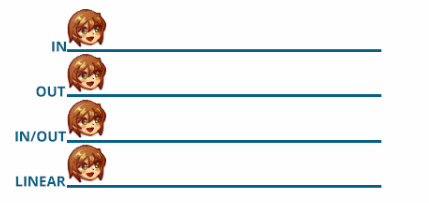
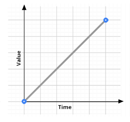
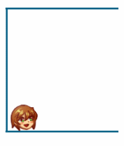
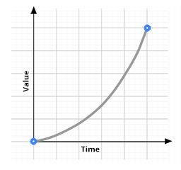
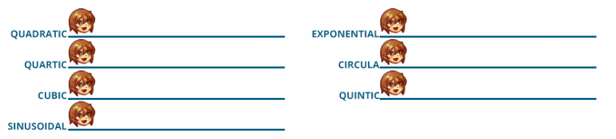
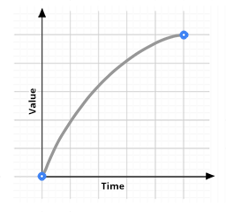
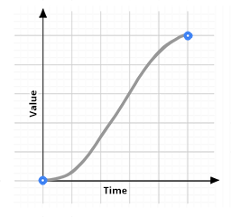

Easing Effects
Easing is an animation technique that adds acceleration and deceleration to objects you want to move.
There are four types of Easing animations: Linear, Ease In, Ease Out, Ease In/Out.
While there are seven types of Varied Tweens:Quadratic, Quartic, Cubic, Sinusoidal (Sine), Qintic, Exponential and Circula.

Linear
Linear means that the object will animate in equal amounts of value/velocity and time.
|
Linear  There is no acceleration or deceleration
|

|
Ease In
Ease In means the object will start from zero value/velocity and then speeds up.
|
 Accelerating from zero value
|
 |
Ease Out
Ease Out means the object will start fast and then slows down to a stop.
|
 Decelerating to zero value
|
Ease In/Out
Ease In/Out is half-half of the motion of Ease In and Ease Out. A visual example of Ease In/Out movement is an Elevator.
|
 Accelerating until halfway where it decelerates.
|
Varied Tweens
Varied Tweens are just different ways to do the easing motions based on a certain equation.
What's listed here is nothing more than a quick summary of the tweens. If you would like a more in-depth explanation, we will provide the links below.
Quadratic Easing- Also known as 'normal' easing, the motion is based on a square variable (t2).
Cubic Easing- The motion is based on the power of three (t3) and as a result, has a curved motion.
Quartic Easing- The motion is based on the power of four (t4) and as a result, applies a bend in the curved motion.
This causes the acceleration to be more exaggerated.
Quintic Easing- The motion is based on the power of five(t5) this causes the motion curve to be more pronounced. It starts quite slow then becomes quite fast.
Sinusoidal (Sine) Easing- The equation is based on a sine or cosine (p(t) = sin(t × π/2) which both results to a sine wave motion.
Exponential Easing- The motion is something that resembles a slope. You have precise control over the duration of the tween, and can jump to any point in time without running the tween from the starting point.
Circula Easing- This is based on the equation for half of a circle, which uses a square root. Similar to Quintic and Exponential, the acceleration for circular easing is dramatic and sudden than the others.
For more information and visual guide, you can visit the websites below: